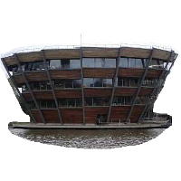
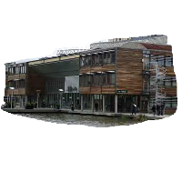
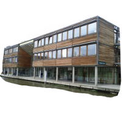
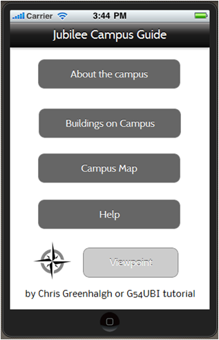
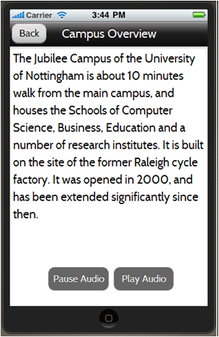
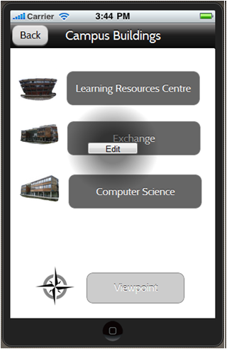
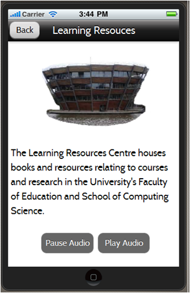

Chris Greenhalgh, 2013-04-22
This directory describes a jubilee campus tour scenario and application, and is intended to provide tutorial and practice material for the trajectory sketching tool.
The app will be used by people walking around Jubilee Campus, who are interested in find out more about the campus, its architecture and facilities, e.g. prospective or new students, their parents, local residents, new employees
—Visitors and new arrivals are not familiar with the campus. New arrivals may need to find their way around the campus in future. Visitors and new arrivals may be interested in the unusual architecture of the campus. Some visitors may have time to “kill”, e.g. waiting for scheduled events, or waiting for someone they are visiting with (e.g. a parent bringing an applicant).
—These people might learn from, or simply enjoy, a tour or guide of the campus and its building.
It will help its user to:

| LRC | Exchange | CS |
|  |  |  |
| Home | Campus | List | Map |
|  |  |  | |
| LRC | Exchange | CS | Viewpoint |
|  | | |
| Compass | Person area | P.O.I. | Viewpoint | Person | Phone |
 |  |  |